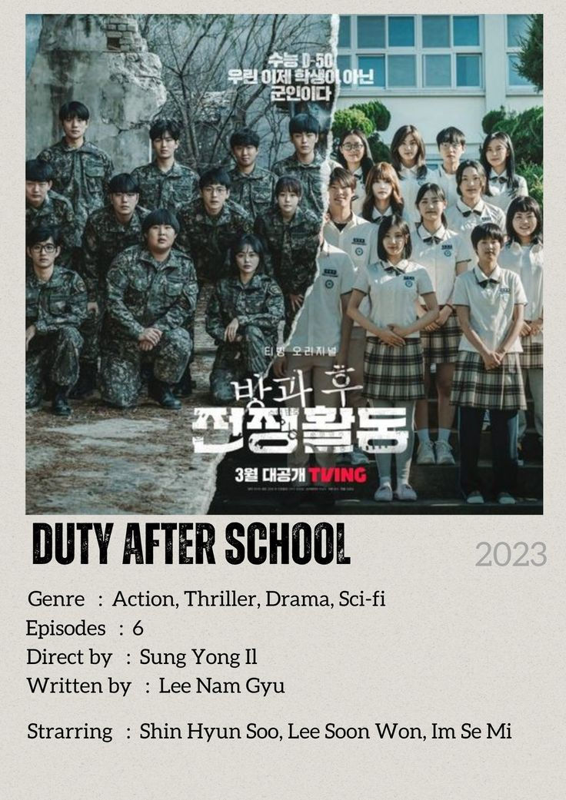
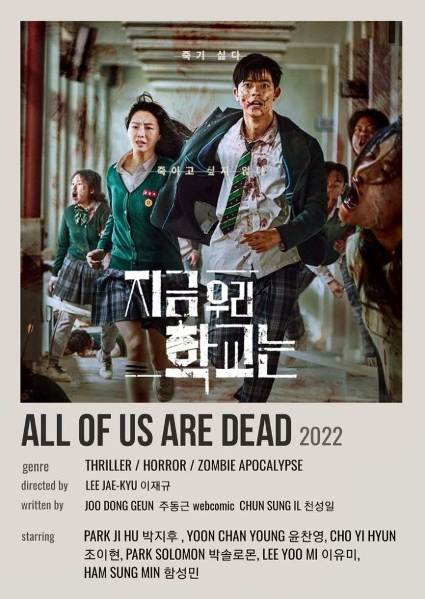

Hobi Aku yaitu menonton film dan main game. Nonton film itu apalagi kalo nontonnya drakor genre thriller, action dan horror itu seruu banget. Nah pas sekali nih kalo soal drakor gaada yang bisa ngalahin drakor Duty After School sama All Of Us Are Dead. Nonton kedua serial ini bener-bener bikin aku mikir soal bagaimana kita bisa menghadapi tantangan besar kalau kita bersama-sama dan tetap kuat Selain itu, mereka juga menunjukkan sisi manusiawi dari tiap karakter, bahkan di tengah situasi paling mengerikan. Buatku, nonton serial kayak gini tuh bukan cuma hiburan, tapi juga cara buat memahami emosi dan keputusan yang diambil orang-orang dalam keadaan sulit.
 Hobi selanjutnya, main game. disini aku suka banget main game Mobile Legend. karena kalo main ML itu seru banget apalagi mabar sama teman teman. selain itu juga di ML kita bisa bersosialisasi. Untuk role sendiri di ML aku suka pake support kalo nggak mm. Hero support yag aku suka pake yaitu Floryn kalo nggak Angela hehe. Terus role mm aku suka pake irithel dan Melissa.Tapi aku nggak se pro itu, kalo main ML paling cuma mengisi waktu kekosongan atau sebagai hiburan.Sekian dari hobiku.